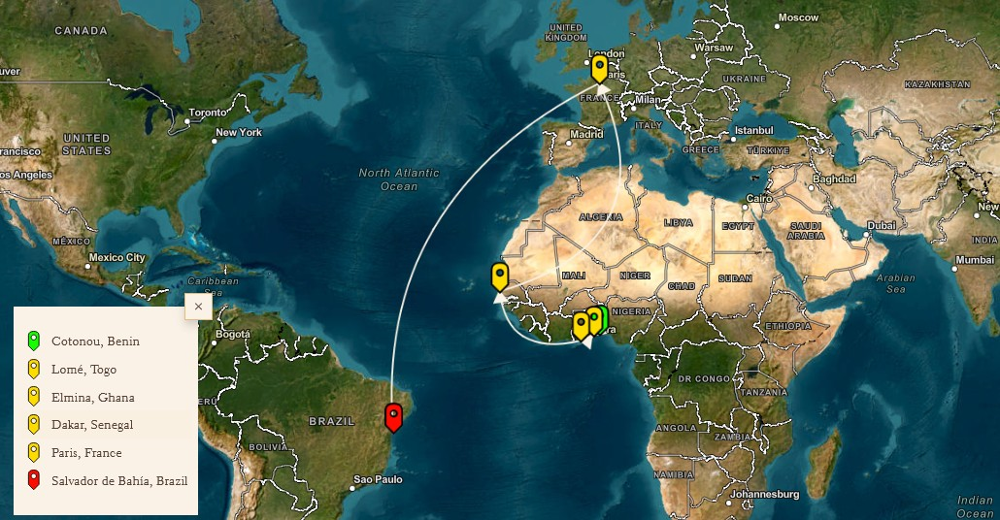
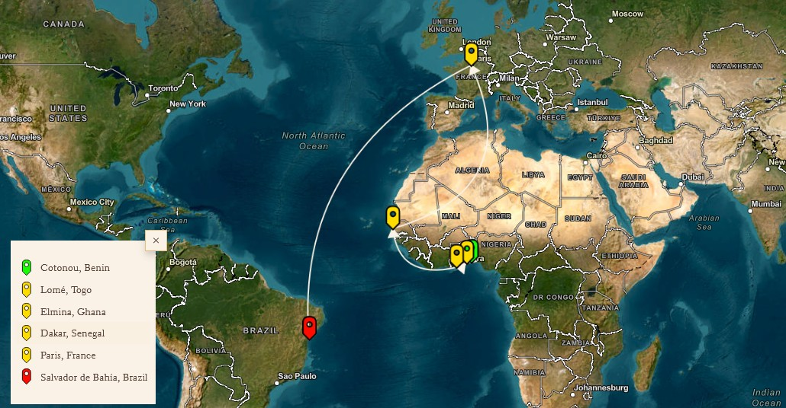

Novel : Pelourinho
Pelourinho by Tierno Monénembo is undoubtedly the most Brazilian of African novels. Its plot takes place in the city of Salvador de Bahia. "Pelourinho" is the name of a place in the old town, where the oldest slave market in Brazil was located. The novel tells the story of an African writer who came to this city to write a book about his Brazilian roots. His favelas friends call him "Escritore" or "Africano". They see in him the Prince of Dahomey whose coming was proclaimed by voodoo songs. For the protagonist, the Escritore therefore, this journey is also a quest for identity, in order to find the traces of his ancestors, uprooted from their villages in order to populate the plantations of the New World.
Author : Tierno Monénembo
2008 Renaudot Prize, Tierno Monénembo is a novelist, with thirteen novels to his credit. Born in Guinea in 1947 and exiled from his country since the age of 23, he has published a major work which gives a large place to nostalgia and exile. Divided between the house that cannot be found and the world, his novels take you on a journey through the countries where he has stayed more or less for a long time (Ivory Coast, Senegal, France, Brazil, Cuba, Algeria). From book to book, he has built a fiction-world like no other in the African literary field, inviting his readers to follow him in the intimacy of societies and their experiences. In Pelourinho, his fifth novel, Tierno Monénembo retraces the frantic quest for an African writer in Brazil.
Mapping of the Transatlantic Journey
 
